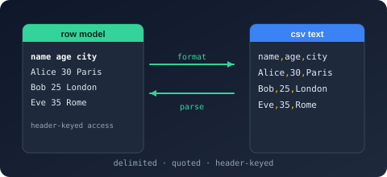

Bodu.Text.Delimited
Bodu.Text.Delimited reads and writes delimited tabular text — RFC 4180 CSV, TSV, and the dialects in between — as a standalone System.Text.Json-shaped library: a forward-only ref struct reader/writer pair over UTF-8 bytes, a typed record serializer with a truly incremental streaming surface, a mutable node DOM, and a read-only document DOM. It is one of the three Bodu line formats and shares the Bodu.Text.Serialization attribute, naming-policy, and callback vocabulary with every other Bodu serializer.
The wire is string-only: the serializer converts scalars with InvariantCulture at the binding layer, and real-world input is handled through explicit dialect policies — field-count mismatches, malformed records, and duplicate headers each have an opt-in leniency knob rather than a silent default. For trimming and ahead-of-time compilation, the serializer also accepts a compile-time record factory in place of reflection.
Part of the Text & Serialization topic.
Install
dotnet add package Bodu.Text.Delimited
Targets net8.0. Depends on Bodu.Text.Serialization and Bodu.Core. Also available through the Bodu.Text.Formats umbrella package.
Headline types
| Type | Purpose |
|---|---|
| Utf8DelimitedReader / Utf8DelimitedWriter | Forward-only, allocation-free token machines, configured by DelimitedReaderOptions / DelimitedWriterOptions. |
| DelimitedSerializer | Records ↔ text: Serialize / Deserialize<TRecord> over strings, UTF-8 spans, buffer writers, and streams; the incremental DeserializeAsyncEnumerableAsync<TRecord> / SerializeAsync(Stream, IAsyncEnumerable<TRecord>) pair; and the reflection-free overloads over IDelimitedRecordFactory<TRecord>. |
| DelimitedSerializerOptions / DelimitedSerializerDefaults | Naming policy, case sensitivity, IncludeFields, Delimiter, Quote, NoHeader; General / Web presets. |
| DelimitedFieldCountBehavior / DelimitedMalformedRecordBehavior / DelimitedDuplicateHeaderBehavior | The dialect policies. |
| DelimitedNode / DelimitedArray / DelimitedObject / DelimitedValue | Mutable DOM — parse, edit, write back. |
| DelimitedDocument / DelimitedElement / DelimitedProperty | Read-only, disposable document model. |
| DelimitedRecordAttribute | Marks a partial POCO for the source generator. |
| DelimitedFormatException / DelimitedSerializationException | Malformed input (with position) vs a record that cannot bind. |
A first round trip
using Bodu.Text.Delimited;
public sealed class Trade
{
public string Symbol { get; set; } = "";
public int Quantity { get; set; }
public decimal Price { get; set; }
}
const string csv = "Symbol,Quantity,Price\nMSFT,100,412.5\n";
List<Trade> trades = DelimitedSerializer.Deserialize<Trade>(csv); // trades[0].Price → 412.5m
string back = DelimitedSerializer.Serialize(trades); // header row + one record
Where to go next
- Line formats introduction, Core concepts, and Getting started — the umbrella trio shared by all three formats.
- Using delimited (CSV / TSV) — documents, typed records, streaming, dialects, dirty input.
- Reflection-free binding — the
[DelimitedRecord]source generator and the factory overloads. - Runnable samples — the
DelimitedDatasample project. - API reference — Bodu.Text.Delimited.